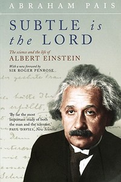
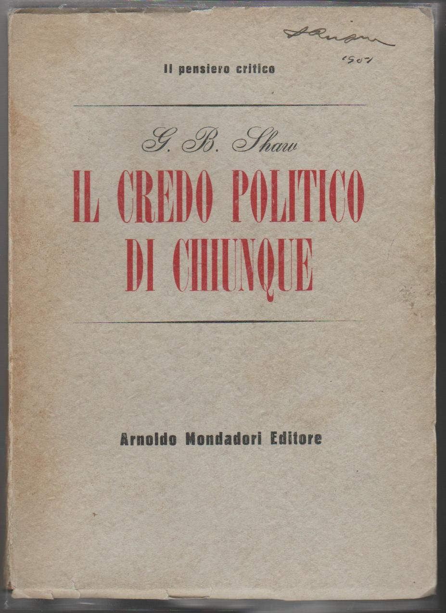

36:42 · 11 OPERE
Aldous Huxley, Fini e mezzi.
Il filo del discorso
La lettura di Fini e mezzi di Aldous Huxley introduce una riflessione sulla dignità umana e sulle condizioni di una riforma sociale. Il relatore contrappone la trasformazione delle persone a una politica ridotta a meccanismi economici, conquista e organizzazione delle masse. I passi del libro sui diversi ideali umani e sul capo divinizzato aprono la questione dell’autorità. L’aneddoto di Einstein e Oppenheimer serve a difendere l’indipendenza dell’intelletto, mentre Kafka offre una immagine della distanza fra apparenza del potere e conoscenza diretta. Kant, Socrate, il precetto biblico dell’amore del prossimo e Moravia accompagnano il principio di non ridurre una persona a strumento. La seconda parte riprende Huxley sul disinteresse, sul distacco da fama e possesso, sulla propaganda e sugli impieghi regressivi della tecnologia. Il relatore estende questa critica al cinema e alla comunicazione contemporanea, con giudizi che la scheda mantiene attribuiti. Il rapporto fra mezzi e risultati conduce alla raccomandazione di un libro politico di Shaw e alla lettura della Repubblica sulla contemplazione di ciò che è ordinato. La conclusione propone un lavoro su di sé e sui modelli ammirati: il fine umano non può essere separato dai comportamenti con cui lo si cerca.
I libri nel discorso

Fini e mezzi
Copertina: Mondadori, 1947
Autore, titolo, edizione inglese 1937 e Mondadori 1947 espliciti; molti passi tradotti nel corso del contributo.
Passaggio 0:15 ↗ · Fonti e libro ↗
Il mondo nuovo
Copertina della raccolta: Mondadori · Oscar Moderni · 2016
L’immagine mostra il volume Mondadori che riunisce Il mondo nuovo e Ritorno al mondo nuovo. Il collegamento nel video riguarda il primo romanzo, per allusione al titolo inglese; non identifica un’edizione usata dal relatore.
Brave New World esplicito per presentare Huxley come autore noto del romanzo.
Passaggio 0:21 ↗ · Fonti e libro ↗
Fondazione della metafisica dei costumi
Identificazione probabile
Copertina: Laterza · Economica Laterza 122 · Filippo Gonnelli, edizione 1997 e ristampe
Immagine autentica dell’opera, controllata visivamente; l’edizione di riferimento non è attribuita al filmato.
Imperativo categorico e formula dell’umanità come fine identificano probabilmente la Fondazione; titolo non pronunciato.
Passaggio 2:19 ↗ · Fonti e libro ↗
Subtle Is the Lord. The Science and the Life of Albert Einstein (Sottile è il Signore)
Identificazione probabile
Copertina: Oxford University Press, paperback 2005, 584 pagine, con prefazione di Roger Penrose; opera originale 1982.
Copertina autentica Oxford dell’edizione 2005: ritratto di Einstein, titolo e autore leggibili, prefazione di Roger Penrose. Non coincide necessariamente con l’edizione posseduta o citata dal relatore. L’identificazione del titolo resta probabile.
Pais e la biografia di Einstein, aneddoto Oppenheimer: titolo non pronunciato, probabile Subtle Is the Lord.
Passaggio 10:16 ↗ · Fonti e libro ↗
Il castello (Das Schloss)
Identificazione probabile
Copertina: Suhrkamp, edizione tedesca in brossura, 423 pagine, prima uscita della collana 2006, ristampa 10 luglio 2025; romanzo pubblicato postumo nel 1926.
Immagine autentica dell’opera, controllata visivamente; l’edizione di riferimento non è attribuita al filmato.
Il titolo detto è Il processo, ma il castello osservato da K. identifica probabilmente il romanzo Il castello; scambio dichiarato.
Passaggio 14:09 ↗ · Fonti e libro ↗
Il processo
Copertina: Adelphi · gli Adelphi, 2020 · edizione di riferimento
Titolo Il processo pronunciato, con brano però riferibile probabilmente al Castello. Si conserva il titolo detto senza attribuirgli con certezza quel brano.
Passaggio 14:09 ↗ · Fonti e libro ↗
Gorgia
Identificazione probabile
Copertina: Gorgia, Bompiani, giugno 2001, a cura di Giovanni Reale, testo greco a fronte, 384 pagine, ISBN 9788845291111. Copertina ufficiale blu, bianca e verde acqua con titolo e autore; edizione di riferimento non identificata nel video.
Immagine autentica dell’opera, controllata visivamente; l’edizione di riferimento non è attribuita al filmato.
Socrate e preferenza per subire anziché commettere ingiustizia: probabile riferimento al Gorgia, titolo non pronunciato.
Passaggio 18:21 ↗ · Fonti e libro ↗
Bibbia
Copertina: San Paolo, 2014 · Nuova Versione dai Testi Antichi · edizione di riferimento
Gesù, Antico Testamento e amore del prossimo espliciti. Levitico 19,18 e riprese evangeliche come luoghi di riscontro, senza imporre una sola versione non specificata.
Passaggio 18:34 ↗ · Fonti e libro ↗
L’uomo come fine
Copertina: Bompiani, 2019, a cura di Simone Casini, 464 pagine; ISBN 9788845298523.
Immagine autentica dell’opera, controllata visivamente; l’edizione di riferimento non è attribuita al filmato.
Alberto Moravia e raccolta L’uomo come fine e altri saggi espliciti.
Passaggio 19:02 ↗ · Fonti e libro ↗
Il credo politico di chiunque (Everybody’s Political What’s What?)
Copertina: Arnoldo Mondadori Editore, Milano, 1951, Il pensiero critico, traduzione di Mario Ducci. Prima edizione italiana; ristampa Biblioteca moderna Mondadori 1962, 642 pagine, verificata nei cataloghi.
Fotografia autentica della copertina Mondadori 1951, fondo crema e titolo rosso, firma di possesso in alto. La foto non certifica la copia del relatore.
George Bernard Shaw e Il credo politico di chiunque espliciti, consigliato senza una citazione estesa.
Passaggio 32:23 ↗ · Fonti e libro ↗
La Repubblica
Copertina: Laterza · La Repubblica · edizione con testo a fronte di riferimento
Immagine associata all’ISBN di riferimento e controllata visivamente; edizione e traduzione non identificate come quelle citate o lette nel video.
Titolo Repubblica e 500a espliciti; il testo letto attraversa soprattutto 500b–d, filosofo e contemplazione dell’ordine.
Passaggio 33:46 ↗ · Fonti e libro ↗